Free and open source
Your PS5, on every screen.
Play your PS5 from your computer, phone or browser, and manage everything on it from the same app: install games, move files, keep your saves and set it all up with a checklist that ticks itself.
macOS · Windows · Linux · Android · iPhone · Docker
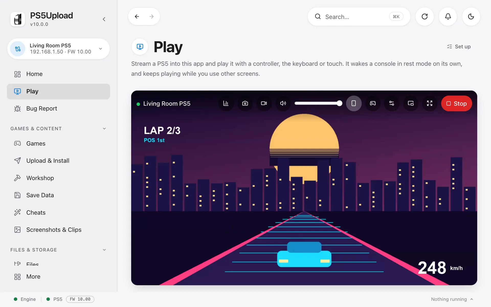
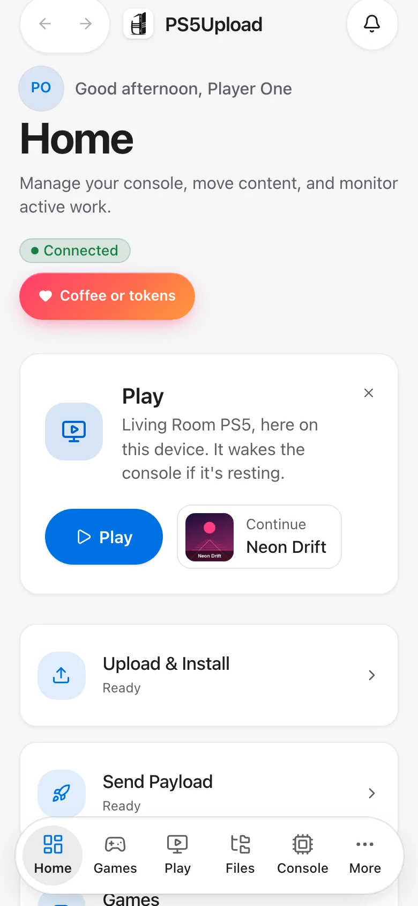
- 6 platforms
- 21 languages
- 1 app for play and management
- 0 cost: free and open source
New in 10.0
Play is the heart of the app
Your console's screen, streamed to the device in front of you. It wakes the PS5 from rest mode, signs your user in, and you play with a controller, the keyboard or touch.
One press from Home
The Play card sits at the top of Home: press Play, or pick up your last game where you left it. Every game's page has Play too, which starts the game and streams it in one go.
- Wakes the console and signs in for you, asking for your PS5 passcode if there is one
- Keeps playing while you use other screens
- Fit, Fill or Stretch the picture; full screen and picture in picture
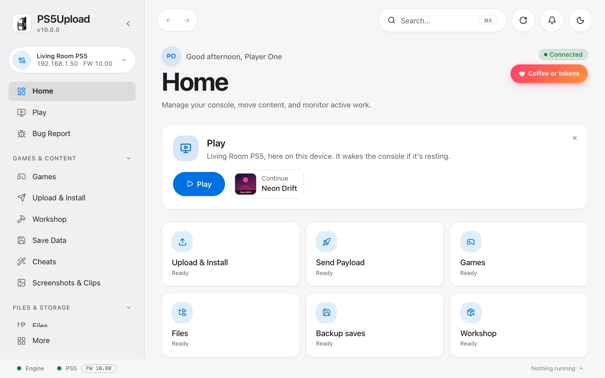
Set up once, with a checklist that ticks itself
Play › Set up walks through everything a console needs, in order. It reads the console every few seconds and ticks each step as it's done; where the app can do the step, the button is right there.
- Connect to your PS5
- Sign in to a user and give it an account ID
- Sign the account in, offline
- Turn Remote Play on
- Pair this app with the console, or with the PIN the PS5 shows
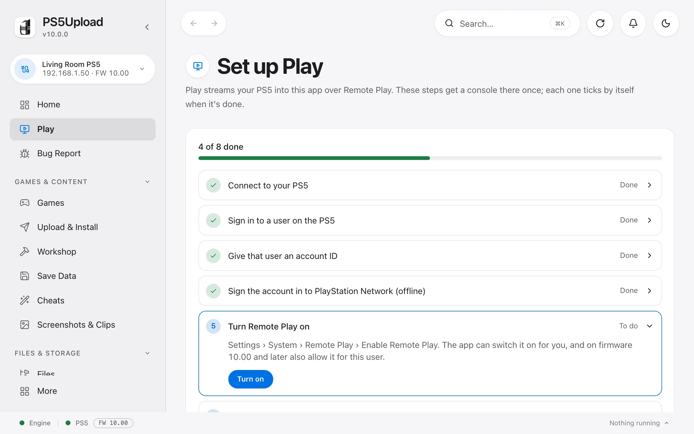
Play together
Scan a code and a phone becomes a controller, or a screen for friends to watch from the couch. Hand a watcher the controller when it's their turn.
- Phones as controllers, up to four
- Watch party with sound, up to four watchers
- Instant replay, screenshots and clips, saved to your phone's photos
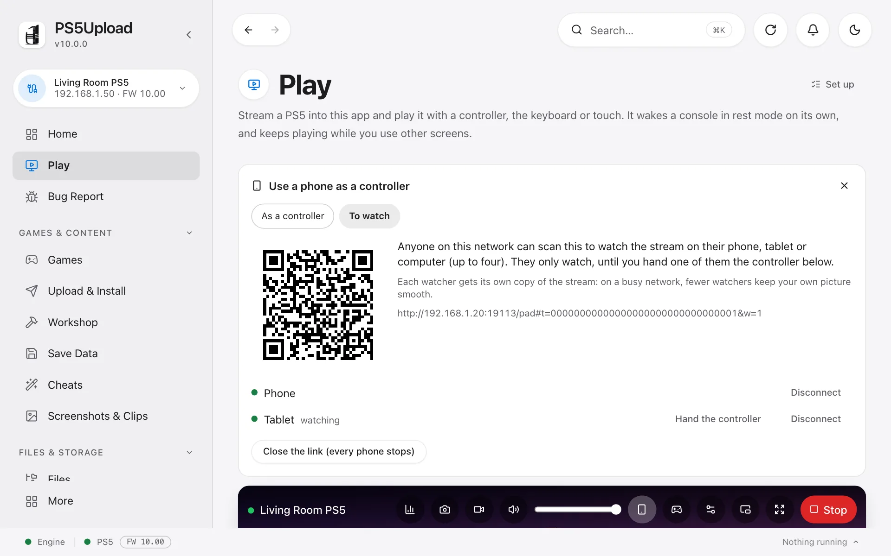
Your keyboard and mouse, as the PS5's own
Play has three ways to use your keyboard and mouse, kept for each game. Switch with the button on the stream bar, or with ⌃ ⌥ M (Ctrl+Alt+M on Windows and Linux).
- Controller: the keys and mouse act as a controller, as before
- Keyboard & mouse: the PS5 gets a real keyboard and mouse, for games and apps that support them, the PS5's browser and homebrew such as terminals
- Mixed: a real mouse, while the keys act as a controller and WASD moves
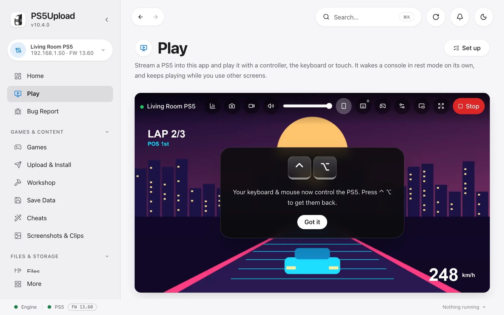
Click to play, ⌃ ⌥ to get out
Click the picture and the PS5 has your keyboard and mouse. Press and let go of ⌃ ⌥ (Ctrl+Alt on Windows and Linux) to get them back.
- A card shows the keys the first time, and again when you seem to be looking for the way out
- A faint "⌃ ⌥ to release" stays at the top while you play
- Both shortcuts can be changed in Settings › Controls › Shortcuts
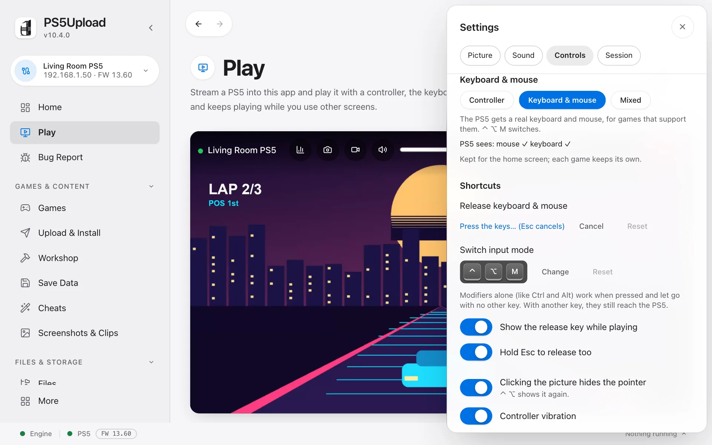
A phone as the PS5's touchpad and keyboard
On a phone or tablet, switch the picture from Controller to Touchpad: drag to move the pointer, tap to click, tap with two fingers to right-click and drag with two to scroll. ⌨ opens your phone's keyboard and types on the PS5.
A phone used as a controller has a Touchpad & keyboard tab too.
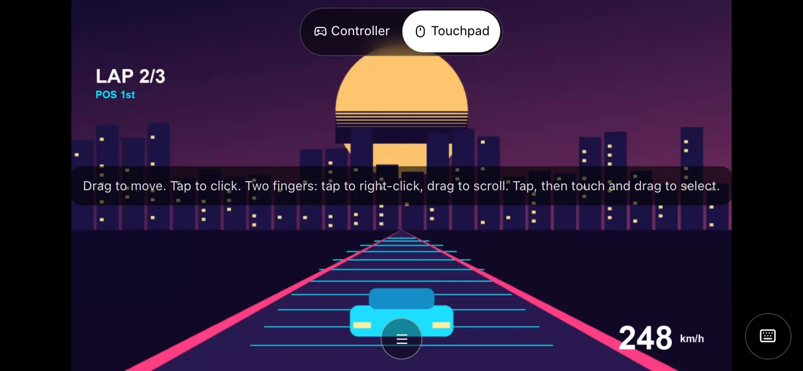
Everything in one app
Fill it, sort it, keep it
Everything between your devices and your PS5, built on its own fast transfer protocol.
Upload & Install
Drop a package, a game folder, an image or an archive: the app works out what it is and does the right thing. Transfers are resumable and run at the full speed of your network, with thousands of small files packed together so they never crawl.
- Install from your computer, a link or a network share
- A queue that carries on while you do other things: pause an upload, or send something else first
- Updates and add-ons install from each game's page
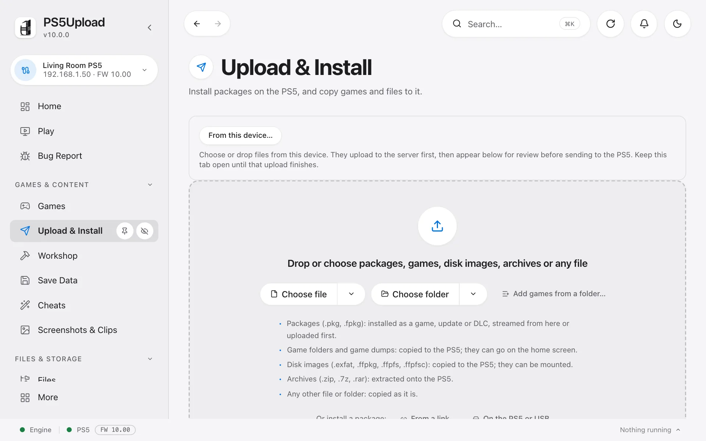
All your games, in one place
One grid for the games on your drives, your network shares and every console, with their updates and add-ons. Each game's page shows where it is and what you can do with it: Play, Launch on PS5, install, move or update.
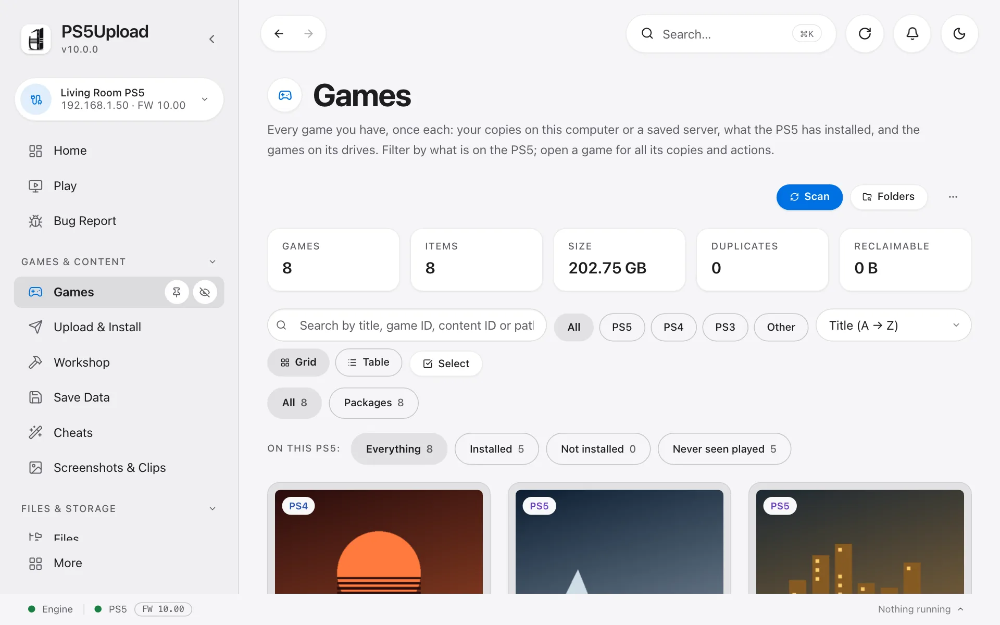
Saves and files
Back your saves up on a schedule or with one press, restore them, and copy one to another user on the same PS5 or to a friend. Emulator saves (PS1, PS2, Switch) too. Browse the console's drives like a folder on your computer: copy, move and open files both ways.
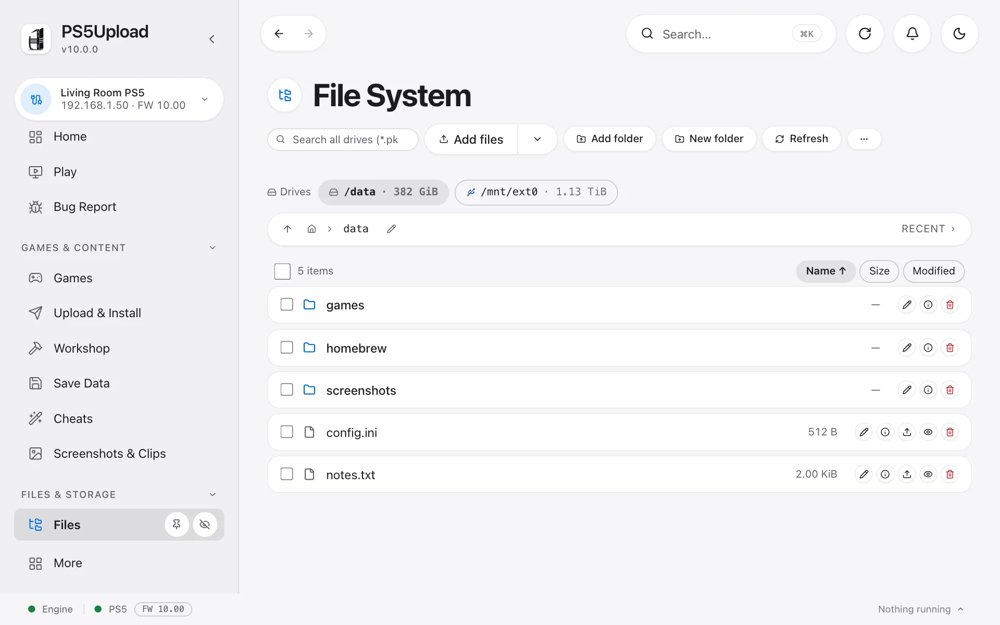
Workshop
Turn a game folder into a package or a disk image, look inside one, and make images smaller with compression. Everything runs on your computer and goes to the console when it's ready.
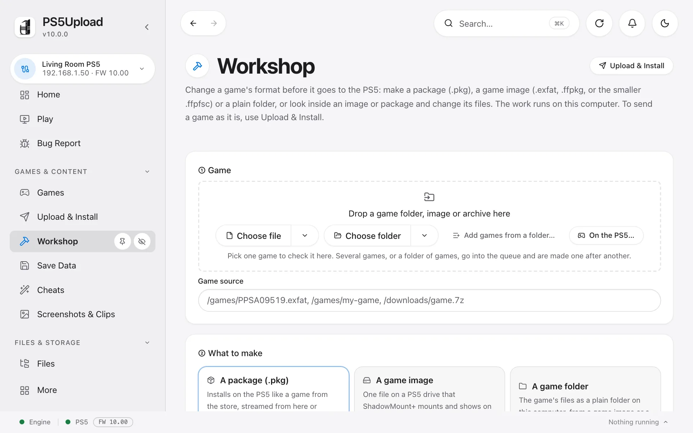
On every device you have
Native apps for macOS, Windows, Linux, Android and iPhone, and a Docker image that serves the same app as a web page from a NAS or server. Several consoles? Add them all and switch with a tap.
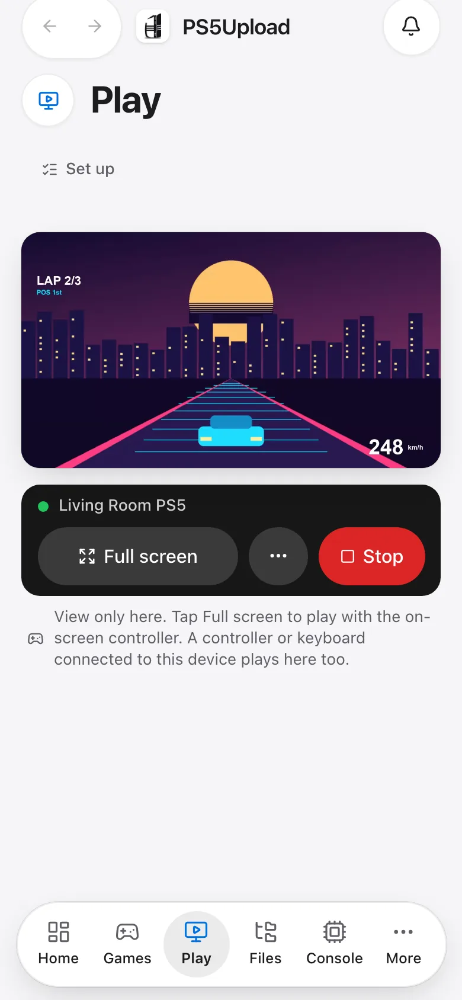
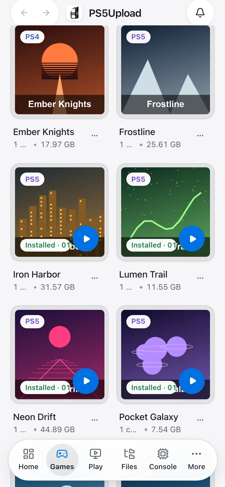
Guide
Get started in five steps
From download to your first game on screen. Most of it happens once.
-
1
Install the app
Download it for your computer or phone below. On a NAS or server, run the Docker image and open it in a browser instead.
-
2
Load the helper on the PS5
Start your PS5's payload loader as you usually do, then press Send helper on the Connection screen. The helper is how the app talks to the console.
-
3
Connect
Type the console's address on the Connection screen, or let the app find it on your network. The status at the bottom turns green when it's there.
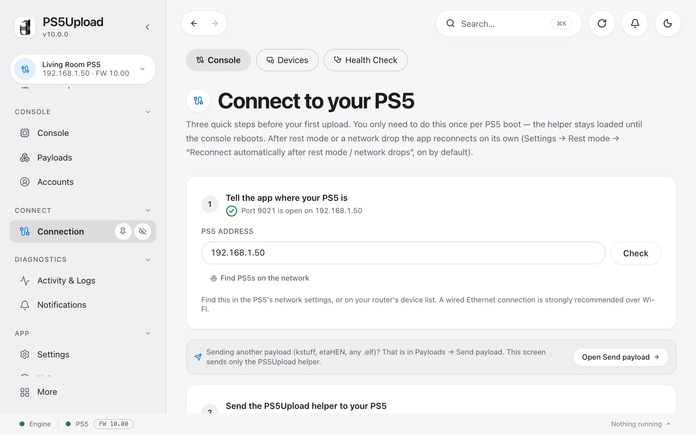
-
4
Set up Play
Open Play › Set up and follow the checklist. Each step ticks by itself when it's done; the one only the console can show (its rest-mode settings) you tick yourself.
-
5
Play, and fill it up
Press Play on Home. To add a game, drop it on Upload & Install; it shows up in Games with Play ready when it's installed.
How do I…
Play with a phone as the controller
- Start Play on your computer.
- Press the phone button on the picture's bar.
- Scan the code with the phone's camera. The phone opens a controller; turn it sideways.
In the PS5Upload app on a phone, Play shows the computer that's playing: tap Use this device as its controller.
Let friends watch
- In the phone panel, choose To watch.
- Friends scan the code: the stream plays in their browser, with sound after a tap.
- Press Hand the controller next to someone to let them play.
Install a game or an update
- Drop the package on Upload & Install, or pick it with Browse.
- It joins the queue and installs; you can keep using the app.
- For an update or add-on, open the game's page in Games and install it from there.
Back up and restore saves
- Open Save Data and choose a folder for backups.
- Back up one game, or turn on automatic backups.
- To go back, pick a backup and press Restore (close the game first).
While playing, the game panel takes a snapshot of the running game's save in one press.
Make the picture sharper on a big screen
- In Play, open Settings › Picture.
- Turn on Upscale to the screen, and set Sharpen to taste.
It runs on your graphics card and turns itself off if the device can't keep up.
Use it from a browser (Docker)
- Run the Docker image on your NAS or server (the command is below).
- Open port 19113 on that machine in a browser.
- The whole app is there, including Play.
Use it from a phone
- Install the app: the Android or iPhone download below. The iPhone app is sideloaded with AltStore or Sideloadly and an Apple ID; a free one works.
- Open Connection, enter the PS5's address and send the helper. The app talks to the PS5 directly, Play included.
- Rather use a browser? Open port 19113 of a computer at home that runs the Docker image, or port 9180 of the PS5 for its own page (first turn on Allow other devices on the network in that page's Settings).
Play in a phone's browser needs an https:// page. Over a plain http:// address, play with the app.
Play away from home
- PS5Upload works on your home network. Never open its ports to the internet: it has no password.
- Join your home network with a VPN such as Tailscale: on your phone or laptop, plus a computer at home set up as a subnet router, or the ps5-tailscale payload on the PS5.
- Connect to the PS5 at its usual address and play. How smooth it is depends on your home connection's upload speed.
Through a VPN, Stream & install and installs from a link don't work (use Upload & install), and waking from rest mode may not: leave the PS5 on.
Wake the PS5 without the TV
- The TV turns on with the PS5 because of HDMI-CEC.
- On the PS5, turn off Settings › System › HDMI › Enable HDMI Device Link, or turn off CEC on the TV (Anynet+, SIMPLINK, BRAVIA Sync…).
- Wake and Play now leave the TV off. The controller won't turn the TV on any more either.
See where Play's delay comes from
- Press Stats on the picture's bar (on a phone, in the ⋯ menu).
- The line net · queue · decode · screen shows each stage in ms: the network to this device, the wait for the decoder, decoding, and showing the picture.
- A big net: a cable for the PS5 and 5 GHz Wi-Fi help most. A big decode: try 720p. Low latency in Play's settings shortens the queue.
The PS5's own part and your TV's delay aren't in these numbers; use the TV's game mode.
Something isn't working
- Open Bug Report in the sidebar: it builds a report with the app's logs.
- Attach it to an issue on GitHub, or ask on Discord.
The in-app Help screen answers most questions, in your language.
Download
The newest release for every platform.
Loading the latest release…
Docker (the app as a web page on your NAS or server)
Serves the full app on your network. Open port 19113 in a browser. Fill in your PS5's address and the network allowed to use it, or start from engine/compose.yaml.
docker run -d --name ps5upload --network host -v ps5upload-data:/data -e PS5_ADDR=<your PS5's IP> -e PS5UPLOAD_ALLOW_IP=<your LAN, e.g. 192.168.1.0/24> ghcr.io/phantomptr/ps5upload-engine-webui:latest
The PS5 helper and the engine on its own
News
Full changelogLoading releases…
Community
Discord
Help, setup questions and ideas. Release announcements land here first.
Report a bug
Open an issue on GitHub. The app's Bug Report screen builds a report with logs to attach.
X
Follow @phantomptr for releases.
Coffee or tokens
PS5Upload is free. If it saves you time, a coffee for me or AI tokens for the code keeps it going, and please support the people behind the other tools you use too.